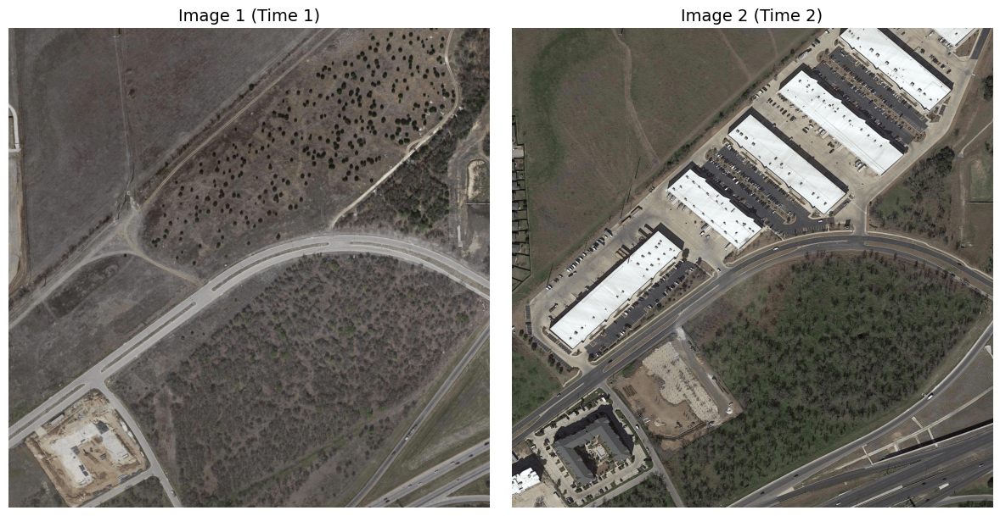
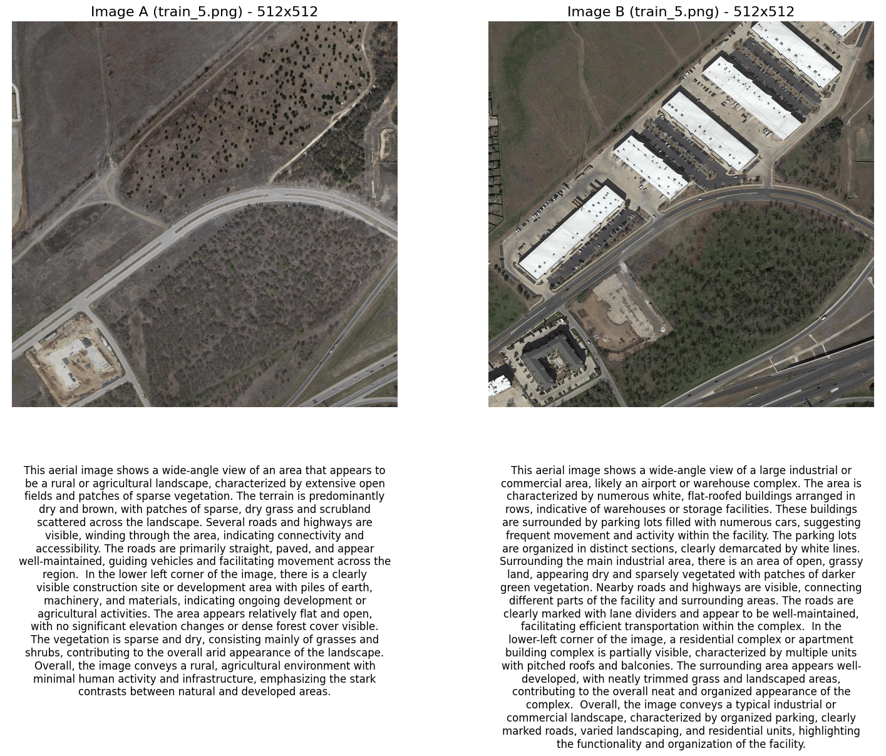

I wanted a short answer to a basic question: if I give a model aerial images from two dates, can it describe the land-cover change in plain language?
Most remote-sensing change detection methods return a mask. The mask shows changed pixels and supports area calculations, but it does not say whether open ground became a warehouse, a road appeared, or vegetation was cleared.
I tested a small pipeline that works with captions instead. Moondream2 describes each image, spaCy extracts land-cover and land-use terms, and a sentence-transformer compares the captions. The output is a text summary of the differences between the two dates.
What I tested
I used an image pair from LEVIR-CD. Each image covers the same place at a different date. For the pair shown in the code below, the earlier image contains open land, roads, and sparse development. The later image contains larger buildings, parking areas, and a denser road layout.
The pipeline is deliberately small:

This differs from models such as the Bitemporal Image Transformer, which learn spatial and temporal relationships from paired imagery and produce pixel-level outputs. It is closer to a reporting layer built on top of image descriptions.
The workflow
Load Moondream2
I used the vikhyatk/moondream2 checkpoint from Hugging Face. The revision is pinned so the experiment does not silently change when the model is updated.
from transformers import AutoModelForCausalLM
model = AutoModelForCausalLM.from_pretrained(
"vikhyatk/moondream2",
revision="2025-06-21",
trust_remote_code=True,
device_map={"": "cuda"},
)Load the image pair
from PIL import Image
pair_number = 5
image_path1 = f"/kaggle/input/levir-cd-change-detection/LEVIR-CD+/train/A/train_{pair_number}.png"
image_path2 = f"/kaggle/input/levir-cd-change-detection/LEVIR-CD+/train/B/train_{pair_number}.png"
image1 = Image.open(image_path1)
image2 = Image.open(image_path2)train_5.png pair loaded by the example code.Open full size Generate separate captions
caption1 = model.caption(image1, length="long")["caption"]
caption2 = model.caption(image2, length="long")["caption"]Separate captions are easy to generate, but they introduce a problem: the model may describe the same feature differently in each image. It may also omit an object from one caption even when that object is visible in both dates.

Compare sentence embeddings
I encoded both captions with all-MiniLM-L6-v2 and calculated cosine similarity.
from sentence_transformers import SentenceTransformer, util
embedding_model = SentenceTransformer("all-MiniLM-L6-v2")
embedding1 = embedding_model.encode(caption1, convert_to_tensor=True)
embedding2 = embedding_model.encode(caption2, convert_to_tensor=True)
cosine_score = util.cos_sim(embedding1, embedding2).item()
semantic_difference = 1.0 - cosine_scoreThe number measures how similar the two captions are. It does not measure physical change in the images.
Extract named landscape features
I used spaCy and two short keyword lists to collect nouns that match land-cover or land-use terms. The lists make the extraction easy to inspect, although they also limit what the script can recognize.
def extract_land_components(text):
doc = nlp(text)
components = {
"land_cover": set(),
"land_use": set(),
"descriptors": {t.lemma_.lower() for t in doc if t.pos_ == "ADJ"},
"actions": {t.lemma_.lower() for t in doc if t.pos_ == "VERB"},
}
for token in doc:
if token.pos_ in {"NOUN", "PROPN"}:
lemma = token.lemma_.lower()
if lemma in LAND_COVER_KEYWORDS:
components["land_cover"].add(lemma)
if lemma in LAND_USE_KEYWORDS:
components["land_use"].add(lemma)
return componentsWhat appeared in one image pair
For pair 5, the extracted terms gave this comparison:
From those terms, the script produced this summary:
The wording is intentionally cautious. The model has inferred likely land use from appearance; the imagery alone does not confirm how the buildings are used.
What the scores mean
I also calculated Jaccard distance between the two extracted feature sets:
features_1 = features_a["land_cover"] | features_a["land_use"]
features_2 = features_b["land_cover"] | features_b["land_use"]
intersection = len(features_1 & features_2)
union = len(features_1 | features_2)
feature_change_score = None if union == 0 else 1.0 - (intersection / union)A larger distance means that fewer extracted terms overlap. It may reflect a changed scene, inconsistent caption wording, or a missed feature. Those causes cannot be separated from this score alone.
The sentence-embedding score has a similar limitation. Two captions may remain close in meaning even when a building has moved or the amount of vegetation has changed substantially. Text comparison discards most spatial detail.
Where it fails
The largest source of error is the caption itself. Small objects may be missed, land-use labels may be guessed, and plausible objects may be mentioned even when they are absent. A wrong caption becomes a wrong change summary.
The keyword extractor adds another failure point. It does not handle phrases such as parking lot or construction site unless those phrases are explicitly represented. Synonyms can also make unchanged features look different.
Most importantly, the method has no geometry. It cannot draw a change polygon, identify a changed building, or calculate hectares. I would not use its output as evidence without checking the imagery and a spatial change product.
A better design
A stronger version would begin with a segmentation or bitemporal change-detection model. The captioning step would receive only the changed regions and explain what is visible there.
I would also ask the model to compare both dates in one prompt and return a fixed schema:
The first evaluation should use LEVIR-CD ground-truth masks. I would check whether the text names the correct type of change and whether each named feature intersects pixels marked as changed. Until that test is done, this remains a way to inspect model behaviour, not a validated change-detection method.
References
- Chen, H., Qi, Z., and Shi, Z. (2021). Remote Sensing Image Change Detection with Transformers. arXiv:2103.00208.
- Khelifi, L., and Mignotte, M. (2020). Deep Learning for Change Detection in Remote Sensing Images: Comprehensive Review and Meta-Analysis. arXiv:2006.05612.
- Radford, A., Kim, J. W., Hallacy, C., Ramesh, A., Goh, G., Agarwal, S., et al. (2021). Learning Transferable Visual Models From Natural Language Supervision. arXiv:2103.00020.
- Reimers, N., and Gurevych, I. (2019). Sentence-BERT: Sentence Embeddings using Siamese BERT-Networks. arXiv:1908.10084.
- Zhu, Y., Li, L., Chen, K., Liu, C., Zhou, F., and Shi, Z. (2025). Semantic-CD: Remote Sensing Image Semantic Change Detection towards Open-vocabulary Setting. arXiv:2501.06808.